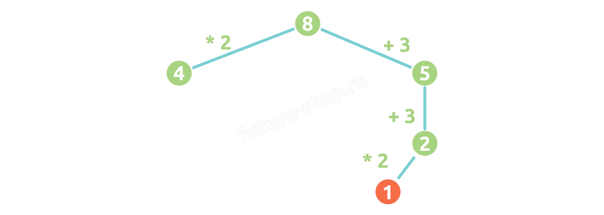
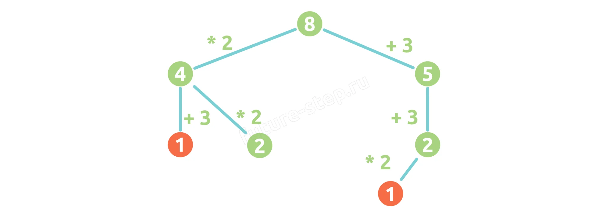
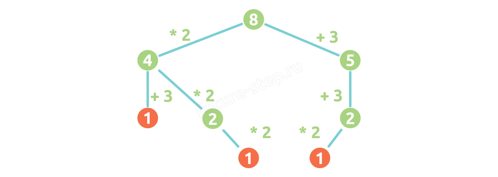
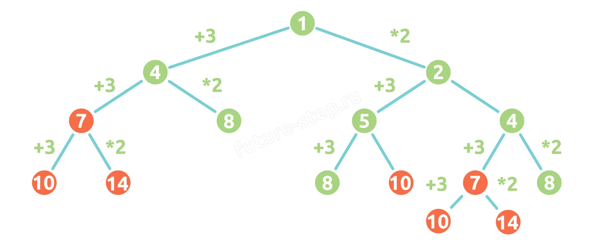

Теория · Исполнители, рекурсивные алгоритмы, подсчёт количества программ
Динамическое программирование (ДП) — способ оптимизации решения сложных задач путём разбиения на более мелкие подзадачи, результаты которых сохраняются и используются повторно.
ДП основано на трёх принципах:
Нисходящий подход (top-down): начинаем с большой задачи, рекурсивно разбиваем на подзадачи, результаты кешируем (мемоизация).
Восходящий подход (bottom-up): начинаем с самых маленьких подзадач, последовательно строим решение более крупных. Обычно реализуется через итерации и табулирование.
💡 Для задания 23: большинство задач решаются нисходящим подходом с рекурсией — это просто и лаконично. Для сложных случаев (ограничения на повторение команд) используется восходящий подход с табулированием.
def fibonacci(n): dp = [0] * (n + 1) dp[0], dp[1] = 0, 1 for i in range(2, n + 1): dp[i] = dp[i - 1] + dp[i - 2] return dp[n] print(fibonacci(35)) # 9227465
Список dp — это таблица (отсюда термин «табулирование»). Индекс = номер числа Фибоначчи, значение =
само число. Мы не можем «с ходу» сказать, чему равно 35-е число — нужно последовательно вычислить все предыдущие.
Рассмотрим упрощённую задачу: «У исполнителя две команды: прибавить 3 и умножить на 2. Сколько существует программ для преобразования числа 1 в число 8?»
Идём от 8 к 1, применяя обратные операции (вычесть 3, разделить на 2):



Всего найдено 3 способа.
def f(x, y): if x == y: return 1 # Дошли до цели — +1 способ if x > y: return 0 # Перескочили — тупик # Ещё не дошли — пробуем обе команды return f(x + 3, y) + f(x * 2, y) print(f(1, 8)) # 3

💡 Как это работает: функция вызывает саму себя для каждой команды. Если дошли до цели (x == y) — возвращаем 1 (нашли один способ). Если перескочили (x > y) — возвращаем 0 (тупик). Результаты складываются — получаем общее количество способов.
Все задания 23 сводятся к четырём типам:
Траектория разбивается на две части: от начала до A и от A до конца. Количество способов = произведение количества способов на каждом участке.
print(f(x, A) * f(A, y))
Добавляем число B в условие «тупика»: если x равно B, возвращаем 0.
# Для движения вверх (от меньшего к большему) if x > y or x == B: return 0 # Для движения вниз (от большего к меньшему) if x < y or x == B: return 0
💡 Можно исключить несколько чисел: if x > y or x == B1 or x == B2: return 0
Сочетаем оба подхода: исключаем B в условии тупика, а в print() умножаем результаты для участков с обязательной точкой A.
# Внутри функции — исключаем B: if x < y or x == B: return 0 # При вызове — разбиваем по точке A: print(f(начало, A) * f(A, конец))
В некоторых задачах запрещено повторять одну и ту же команду более N раз подряд. Решение: добавляем третий
параметр — строку path, в которой накапливаем историю команд.
def f(x, y, path=""): # Проверяем, нет ли в пути запрещённой последовательности if "AAA" in path or "BBB" in path: return 0 if x == y: return 1 if x > y: return 0 # Добавляем букву команды в путь return (f(x + 1, y, path + "A") + f(x * 2, y, path + "B"))
🔍 Как это работает: при каждом рекурсивном вызове дописываем букву команды в строку
path. Если в пути появилась запрещённая последовательность («AAA» или «BBB») — возвращаем 0, этот
путь не учитывается.
Особый тип задачи: не сколько программ преобразуют A в B, а сколько различных чисел можно получить из A, выполнив ровно N команд.
Здесь не работают рекурсивные функции подсчёта путей — нужно отслеживать все возможные состояния после каждой команды. Решение: используем множество (set) — оно автоматически отсеивает дубликаты.
1
Начинаем с множества, содержащего только исходное число: {A}.
2 На каждом шаге: для каждого числа в множестве применяем все команды, собираем результаты в новое множество.
3 Повторяем N раз (N — количество команд).
4
Ответ — количество элементов в итоговом множестве: len(множество).
# Команды: ×2 и ×2+1, исходное число 1, ровно 9 команд results = {1} for _ in range(9): new_results = set() for x in results: new_results.add(x * 2) # команда 1: удвоить new_results.add(x * 2 + 1) # команда 2: удвоить и прибавить results = new_results print(len(results))
💡 Почему множество: разные последовательности команд могут привести к одному и тому же числу. Множество автоматически убирает дубликаты, оставляя только уникальные результаты.